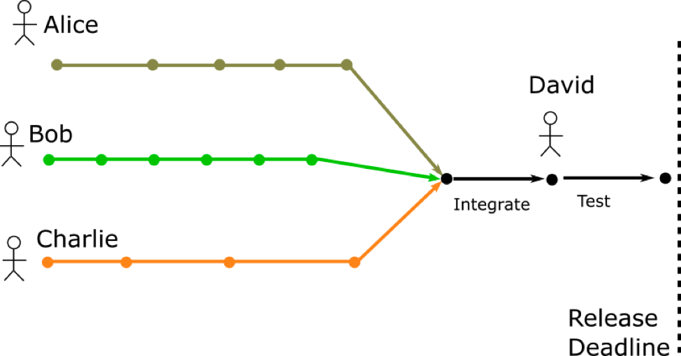
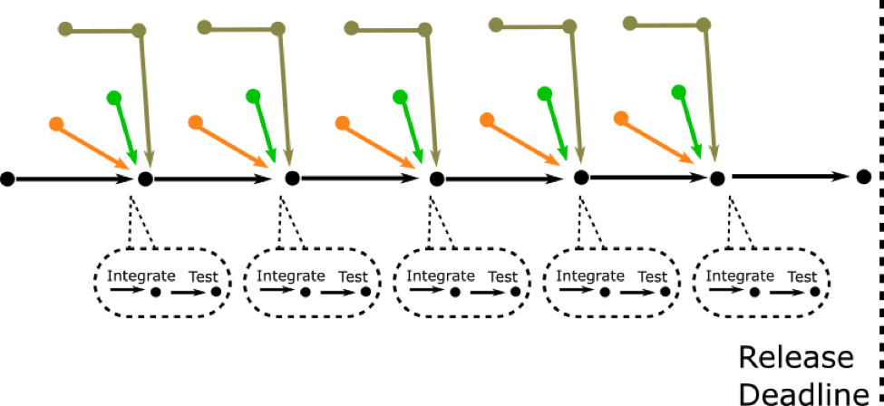
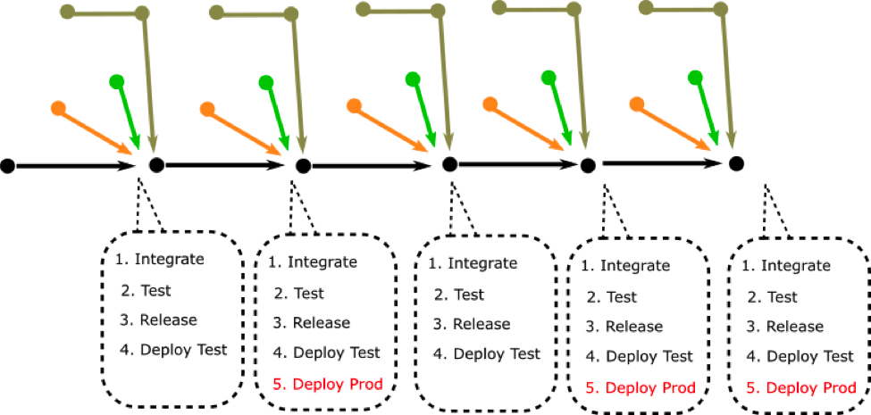

- 00 开篇词 你为什么应该学好软件工程？.md.html
- 01 到底应该怎样理解软件工程？.md.html
- 02 工程思维：把每件事都当作一个项目来推进.md.html
- 03 瀑布模型：像工厂流水线一样把软件开发分层化.md.html
- 04 瀑布模型之外，还有哪些开发模型？.md.html
- 05 敏捷开发到底是想解决什么问题？.md.html
- 06 大厂都在用哪些敏捷方法？（上）.md.html
- 07 大厂都在用哪些敏捷方法？（下）.md.html
- 08 怎样平衡软件质量与时间成本范围的关系？.md.html
- 09 为什么软件工程项目普遍不重视可行性分析？.md.html
- 10 如果你想技术转管理，先来试试管好一个项目.md.html
- 11 项目计划：代码未动，计划先行.md.html
- 12 流程和规范：红绿灯不是约束，而是用来提高效率.md.html
- 13 白天开会，加班写代码的节奏怎么破？.md.html
- 14 项目管理工具：一切管理问题，都应思考能否通过工具解决.md.html
- 15 风险管理：不能盲目乐观，凡事都应该有B计划.md.html
- 16 怎样才能写好项目文档？.md.html
- 17 需求分析到底要分析什么？怎么分析？.md.html
- 18 原型设计：如何用最小的代价完成产品特性？.md.html
- 19 作为程序员，你应该有产品意识.md.html
- 20 如何应对让人头疼的需求变更问题？.md.html
- 21 架构设计：普通程序员也能实现复杂系统？.md.html
- 22 如何为项目做好技术选型？.md.html
- 23 架构师：不想当架构师的程序员不是好程序员.md.html
- 24 技术债务：是继续修修补补凑合着用，还是推翻重来？.md.html
- 25 有哪些方法可以提高开发效率？.md.html
- 26 持续交付：如何做到随时发布新版本到生产环境？.md.html
- 27 软件工程师的核心竞争力是什么？（上）.md.html
- 28 软件工程师的核心竞争力是什么？（下）.md.html
- 29 自动化测试：如何把Bug杀死在摇篮里？.md.html
- 30 用好源代码管理工具，让你的协作更高效.md.html
- 31 软件测试要为产品质量负责吗？.md.html
- 32 软件测试：什么样的公司需要专职测试？.md.html
- 33 测试工具：为什么不应该通过QQ微信邮件报Bug？.md.html
- 34 账号密码泄露成灾，应该怎样预防？.md.html
- 35 版本发布：软件上线只是新的开始.md.html
- 36 DevOps工程师到底要做什么事情？.md.html
- 37 遇到线上故障，你和高手的差距在哪里？.md.html
- 38 日志管理：如何借助工具快速发现和定位产品问题 ？.md.html
- 39 项目总结：做好项目复盘，把经验变成能力.md.html
- 40 最佳实践：小团队如何应用软件工程？.md.html
- 41 为什么程序员的业余项目大多都死了？.md.html
- 42 反面案例：盘点那些失败的软件项目.md.html
- 43 以VS Code为例，看大型开源项目是如何应用软件工程的？.md.html
- 44 微软、谷歌、阿里巴巴等大厂是怎样应用软件工程的？.md.html
- 45 从软件工程的角度看微服务、云计算、人工智能这些新技术.md.html
- 一问一答第1期 30个软件开发常见问题解决策略.md.html
- 一问一答第2期 30个软件开发常见问题解决策略.md.html
- 一问一答第3期 18个软件开发常见问题解决策略.md.html
- 一问一答第4期 14个软件开发常见问题解决策略.md.html
- 一问一答第5期 22个软件开发常见问题解决策略.md.html
- 学习攻略 怎样学好软件工程？.md.html
- 特别放送 从软件工程的角度解读任正非的新年公开信.md.html
- 结束语 万事皆项目，软件工程无处不在.md.html
- 捐赠
26 持续交付：如何做到随时发布新版本到生产环境？
你好，我是宝玉。到今天为止，持续交付已经成为一种公认的好的开发实践，越来越多的开发团队都已经应用持续交付，它通过自动化的方式，让你的代码在每一次提交后，都能自动化地走完编译、测试流程，完成后即可随时准备好部署发布。
持续交付如果细分，其实可以分成持续集成、持续交付和持续部署三个概念，这三个概念很相近，但又有所不同。
今天我将带你了解什么是持续集成、持续交付和持续部署？以及我们该如何用好它们，在项目中最大程度上发挥其效用。
集成、部署和交付的发展史
要想更好地理解并应用好持续集成、持续交付和持续部署，你需要了解它们的演变史。持续集成、持续交付和持续部署的历史还不算太长，但是集成、部署和交付却是伴随着软件工程一起发展的。
集成的发展演变
在多人软件项目开发的时候，每个人都会负责一部分功能模块的开发，集成指的就是每个人把自己开发的分支代码，合并到主干上，以便测试打包。
集成的原始阶段
早在瀑布开发的年代，在开发阶段，一般是不集成的。大家各自开发，等到开发阶段差不多快结束了，再一起提交代码到源代码管理工具，让代码集成在一起，再编译、部署发布到测试环境。
由于长时间都是在各自的开发环境运行，每次集成都是很痛苦的过程，会遇到各种问题，比如说编译无法通过、hard code 了开发环境地址、类库版本不一致、API 格式不一致等，通常要持续几天甚至几周才能逐步有一个相对稳定的版本。

图片来源：Understanding the Difference Between CI and CD
《重构》的作者 Martin Fowler 说过：“如果一件事很痛苦，那么就更频繁的做（if it hurts, do it more often. ）”，持续集成本质上也是把集成这件让人痛苦的事情，更加频繁地去做。

图片来源：Understanding the Difference Between CI and CD
瀑布模型开发的集成，或者说传统的集成，都是在开发阶段整体完成的差不多了，才开始集成。而持续集成的做法，则是每次有代码合并入主干之前，都进行集成，持续的集成。代码集成到主干之前，必须通过自动化测试，只要有一个测试用例失败，就不能集成。
持续集成的好处很明显：
配合自动化测试，这样可以保证主干的代码是稳定的；
频繁集成可以让开发人员总能从主干及时获得最新的代码，不至于像类库、API 不一致等问题到最后测试的阶段才暴露出来。
持续集成主要的问题就是搭建整个持续集成环境，要稍微麻烦一点，另外需要配合一些流程规范来辅助执行，比如要求有一定自动化测试代码的覆盖率，要求测试通过才能合并到主干。
部署和交付的发展史
部署指的是将代码发布到各种环境，比如部署测试环境以供测试。交付则指的是软件产品在测试验收通过后，具备发布到生产环境交付给客户使用的条件。
- 部署和交付的原始阶段
在早些年，部署是一件很麻烦的事情。需要手动获取最新源代码、编译、再需要针对环境修改很多配置。
这事我确实深有体会，当年在飞信时就这样，几十个服务，一个服务有十几个项目，光挨个编译一遍就要好久，然后每个服务还有自己的配置。所以当年专门有一个人，就负责每天部署各种服务到测试环境。
生产环境就更麻烦了，因为出错了会导致服务中断。最初部署生产环境是开发人员自己做的，根据自己的经验把程序部署，然后手动修改很多配置，以保证正常运行。但这样经常会遗漏一些配置，导致程序无法正常运行，出问题后程序员很可能会直接在线上环境修复 Bug，导致更大问题。
随着分工的进一步细化，逐步发展成有专门的运维岗位，由运维人员负责部署。而开发人员上线前要写专门的部署文档和检查表，运维人员按照部署文档和检查表一步步部署生产环境。
这样确实有效减少了配置错误等问题，但整个部署过程还是很繁琐，尤其是服务器一多，耗时很长，仍然可能会因为人工操作错误导致失败。
所以为了避免部署出问题，会尽量避免进行生产环境部署，几周甚至几个月才会部署一次。
- 从手动部署到脚本自动化部署
对于程序员来说，如果一件事能自动化解决，迟早会有人找出自动化的解决方案，部署也由原来的手动部署发展成为自动化部署。
早期的自动化部署解决方案是每日构建（Daily Build），简单来说，就是大家在每天晚上下班后，每日构建程序自动从源代码管理器下载最新代码，编译、部署程序到测试环境。这样第二天测试人员就可以拿到最新的程序，对前一天修复的 Bug 进行测试。
每日构建是个很大的进步，因为初步实现了自动化对代码进行编译、部署测试环境。但也有一些不完善的地方，比如说如果有开发人员提交的代码有问题，可能会导致当天的编译或部署失败，那么第二天开发人员上班后，还需要手动解决。
你会发现，自动化逐步应用到运维领域，确实是让部署过程更容易，但也只是让部署过程更容易，还是无法解决发布版本的质量问题，还是可能会因为配置错误导致失败，测试环境正常的功能到生产环境就不工作了。
- 从脚本部署到持续交付
其实在理解了持续集成后，再理解持续交付就要容易多了。持续交付，就是在持续集成的基础上，再进一步，在功能合并到主干后，不仅会进行自动化测试，还会打包，并部署到测试环境中。
理论上来说也可以直接部署到生产环境，但是这个环节需要人工确认。参考下图，红色部分表示需要手动确认。

图片来源：Understanding the Difference Between CI and CD
持续交付本质上也是把部署和交付这件让人痛苦的事情，更加频繁地去做，从而让部署和发布变得不但不痛苦，反而越来越简单。
把持续交付的工作做好后，部署生产环境会变得非常简单，只需要点一下按钮或者运行一个命令，就可以很快完成，不需要人为地去修改配置等手动操作，也将因为配置错误或者环境不一致导致的问题的可能性降到了最低。
- 从持续交付到持续部署
持续交付，对于生产环境的部署，依然需要有手动确认的环节。而持续部署，和持续交付唯一的不同，就是手动确认的环节都没有了，每次代码从分支合并到主干，在自动化测试通过后，会直接自动部署生产环境，不需要人工确认。
但是，持续部署要想做好，还是很有挑战的一件事，毕竟从代码合并到生产环境的部署，如果没有人工干预仅仅依赖于自动化测试，这对自动化测试的覆盖率和稳定性要求非常高。尤其在开发新功能时，还需要引入新的自动化测试代码，可能会导致测试不全面。
当然对于新功能可能导致的不稳定问题也有解决策略，就是把新功能用功能开关（Feature flag）隐藏起来，设置特定的 Cookie 或者 Header 才打开，到生产环境后人工再测试一遍，通过后再打开，如果没通过，就继续修复继续持续部署。
该不该应用持续交付？
经常会有人问我类似的问题：我们是瀑布模型开发，该不该应用持续交付？
我的答案是：持续交付和用什么开发模型是没有关系的，瀑布模型也可以应用持续集成，应该尽快将持续集成的环境和相应的开发流程搭建起来，可以马上看到好处。
尽快暴露问题：Martin Fowler 说过，“持续交付并不能消除 Bug，而是让它们非常容易发现和改正。”自动化测试，可以保证很多问题在合并到分支之前就能被发现；每次合并后就部署到测试环境，也能让测试人员尽早介入，及时发现问题。
极大提升效率：持续交付让开发过程中从代码合并，一直到最终部署，都实现了自动化，能极大程度上提高效率。
提升质量：每次合并之前都需要通过自动化测试，因此错误会少很多。
降低项目成本：在最初搭建持续交付环境的时候，是要投入一定成本的，但是从长远看，开发效率提升了，代码质量提高了，反而是对降低项目的整体成本有帮助的。
虽然现在持续交付还不够普及，但未来就像源代码管理一样，成为开发团队的标配。现在大厂都已经普及了持续交付，还会有专门的团队负责持续交付工具的开发和维护。对于中小厂，一般不需要自己开发持续交付工具，可以基于开源工具搭建，或者购买托管的持续交付工具，一样可以很好满足持续交付的需求。
如果你所在团队还没有开始用起来持续交付，那么不如现在开始应用起来，能有效提升团队的开发效率和代码质量。当然很多团队没有推行，主要问题还是不知道如何搭建一套持续交付的环境。接下来，我就给你介绍一下如何搭建自己的持续交付环境。
如何搭建持续交付环境？
要搭建好自己的持续交付环境，其实并不算太难，已经有很多持续集成工具和教程帮助我们做这件事。
准备工作
根据前面对持续交付的说明，要想搭建自己的持续交付环境，并不是简单找一个持续集成工具一搭就可以工作了，而是还需要做一些准备工作。
我们先来看持续集成部分，持续集成相对要求简单：
- 需要有源代码管理工具，比如说 git、svn，因为持续集成工具需要从统一的源代码仓库获取代码；
- 需要写自动化测试代码，因为持续集成有一个很重要的条件，就是自动测试必须通过。
第一个条件其实好满足的，现在源代码管理工具已经是标配，无论是免费的还是收费的，都有很多选择。第二个条件其实也不是太大的问题，因为自动化测试覆盖率，可以逐步提升，不要求一步到位。所以可以先把自动化测试写起来，然后在开发过程中逐步增加覆盖率。
持续交付相对比持续集成要求更高，因为整个过程需要高度的自动化。要实现持续交付，你的项目需要满足以下条件：
- 对代码构建的过程可以反复进行，并且每次构建的结果是一致的、稳定的；
- 所有环境的配置都存在于源代码管理工具中，不仅仅是代码；
- 需要自动创建针对于不同环境的发布包；
- 所有环境的部署发布步骤都必须是自动化的。
上面这些要求，最难的部分其实就是自动化打包和自动化部署到各种环境，因为每套程序都不一样，每个服务器环境也不一样，这是必须要各个团队针对自己的项目情况去解决的问题。
选择合适的持续集成工具
持续集成工具现在已经有很多选择，有开源的、商业的，有线上托管的，还有自己搭建的。
主要的持续集成工具有这些：
- Jenkins
Jenkins应该是目前最好的开源持续集成工具，可以自己搭建，插件非常丰富，可以满足绝大部分项目的需要。相对使用难度要高一些，需要花一点时间学习。
- Go CD
Go CD是 ThoughtWorks 公司出品的持续集成工具，可以免费使用。
- Travis CI
Travis CI是一个老牌的托管的商业 CI 系统，和 Github 集成的非常好，尤其是开源项目，可以免费使用。
- GitLab CI
GitLab CI是 Gitlab 推出的持续集成工具，可以自己搭建也可以使用它的在线托管，价钱便宜。
- Azure Pipelines
Azure Pipelines是微软的持续集成平台，可以自己搭建也可以使用它的在线托管，和微软的开发语言和服务集成很好。
根据选择的工具实施
在选好你要用的持续集成工具后，就需要根据工具的说明去搭建。这部分相对简单，网上也有比较多的教程，限于篇幅，这里我就不一一介绍啦，相信你通过它们的官方网站或者是搜索，很容易能找到很多相关的使用教程。
总结
今天我带你一起学习了与持续交付相关的一些概念：
持续集成，就是持续频繁地将代码从分支集成到主干，并且要保证在合并到主干之前，必须要通过所有的自动化测试。
持续交付，则是基于持续集成，在自动化测试完成后，同时构建生成各个环境的发布包，部署到测试环境，但生产环境的部署需要手动确认。
持续部署，是在持续交付的基础上，对生产环境的部署也采用自动化。
要搭建持续交付环境，首先需要做好准备工作，例如自动化测试代码和自动部署脚本；然后要选择好持续集成工具；最后按照选择的持续集成工具来实施。
最后，推荐你配合阅读持续交付 : 发布可靠软件的系统方法，这本书很系统地讲述了持续交付的概念和如何去实施的过程。
© 2019 - 2023 Liangliang Lee. Powered by gin and hexo-theme-book.